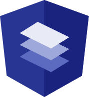
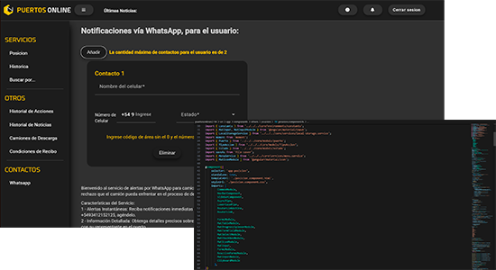

Tecnologias aplicadas


.png)

Esta Web Privada consiste en la logistica y la administracion de entregas de todo tipo de granos. En el cual los usuarios hacen sus envios a los llamados "Puertos" aquellos que reciben el producto.
El objetivo de esta Web fue recostruirla, dandole sustentabilidad, escalabilidad y ciclo de vida. Ya que la web vieja del mismo nombre necesitaba ya ser renovada tanto para los usuarios que la utilizaban como para los nuevos proveedores.

Opté por mantener la estructura de la web antigua, ya que esta fue una reconstruccion, me encargue de dar un funcionalidad sin definir muchos cambios para que los usuarios mas viejos no se sientan perdidos. Y, al mismo tiempo renovando y simplificando funciones para agilizar y optimizar la web
Este proyecto me dejó muchas enseñanzas, ya que tuve que reconstruirlo por mi cuenta desde cero. Aprendi mucho sobre metodos de agilizacion en mi tipeo, así mismo como reforzar mis conocimientos y tomar un profundo amor por el FrameWork que utilicé.